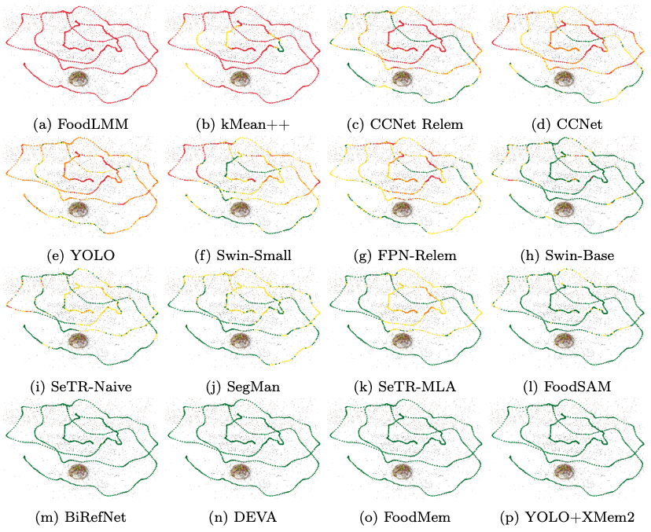
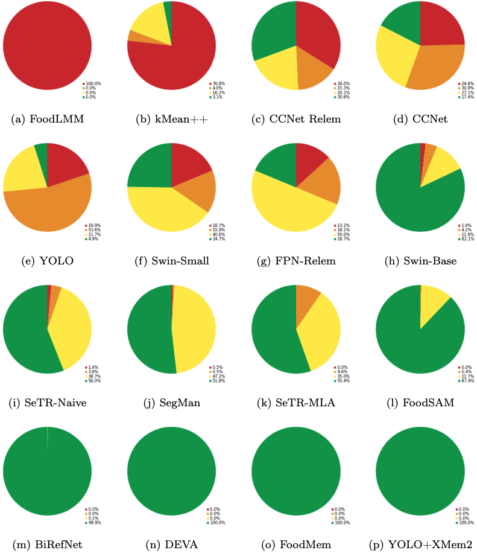
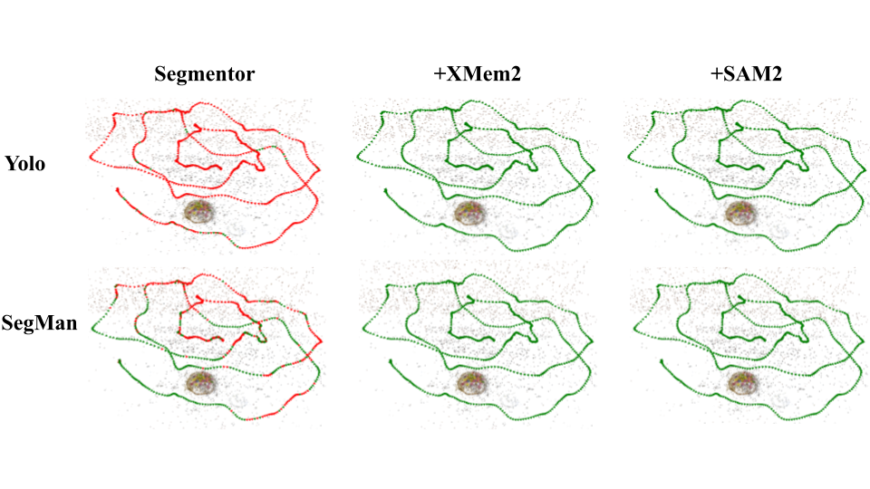

Proposed Methodology
![Overview of the proposed three-stage methodology: (1) keyframe segmentation generates initial masks, (2) temporal propagation transfers them across non-key frames using stored features, and (3) late fusion refines masks by combining propagated and fresh predictions, enabling a reproducible and temporally coherent food-segmentation process. Camera poses shown in green indicate cases where the matching accuracy threshold $mAP \geq 95\%$ is satisfied; poses in red denote those falling below this threshold.](imgs/benchseg.png)
Overview of the proposed three-stage methodology: (1) keyframe segmentation generates initial masks, (2) temporal propagation transfers them across non-key frames using stored features, and (3) late fusion refines masks by combining propagated and fresh predictions, enabling a reproducible and temporally coherent food-segmentation process. Camera poses shown in green indicate cases where the matching accuracy threshold mAP ≥ 95% is satisfied; poses in red denote those falling below this threshold.
Experimental Results


The figure shows the comparison of camera locations for different methods on a Foodkit object, with cameras colored by mAP: red for ≤50%, orange for 50–75%, yellow for 75–95%, and green for ≥95%, highlighting differences in coverage and reliability across methods.
Segmentor ❤️ Memory Tracking

The figure shows the comparison of camera locations for the base segmentor, the segmentor with XMem2, and the segmentor with SAM2, with cameras colored by mAP: red for ≤50\, orange for 50–75%, yellow for 75–95%, and green for ≥95%. The visualization highlights how each integration affects segmentation robustness across different viewpoints.
Citation
If you want to cite our work, please use this:
@article{almughrabi2025BenchSeg,
title={BenchSeg: BenchSeg: A Large-Scale Dataset and Benchmark for Multi-View Food Video Segmentation},
author={Guillermo Rivo, Carlos Jiménez-Farfán, Umair Haroon, Farid Al-Areqi, Hyunjun Jung, Benjamin Busam, Ricardo Marques, Petia Radeva},
journal={arXiv preprint TBD},
year={2025}
}